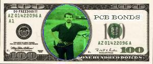

Yes, the magazine is free to all browsers, but we offer a member version as well. It contains no ads, except in the classified section, and has extra features, including a members-only message board, a reading room (with lots of goodies, such as browsable classics, and a serialization of Y2K: The Millennium Bug, Don Lobo Tiggre's action-packed pro-freedom novel), and the ability to download each issue as a .zip file for offline browsing. We also offer some services free for members (placing an ad), or give preference to members, including research, advice, references, etc. The cost of a basic subscription is $25, about the same as that of a family dinner at Pizza Hut--for a whole year's worth of Doing Freedom!
Well, by subscribing you do get more goodies, and fewer banners flashing on your screen... but we know our main draw is the content of Doing Freedom!, which is free. Unlike many other pro-freedom publications on the Web, we pay for our content, because part of our mission is to enable individuals to help support themselves with their freedom-oriented work. This also helps ensure high quality articles and other materials for you. As you may have noticed, we have some well-known liberty lovers writing for us... and they ain't cheap! By subscribing, you'll be adding to the free-market economy, and enabling us to buy more of the content you want.
We're delighted that you're interested in subscribing. The best way to do so is to send your payment to us following the instructions below. We don't accept credit cards. Think about it... we're publishing stuff the thought police hates, and you're wanting to send us payment for doing it (can you say "conspiracy"? Sure you can!). What better way to make it easy for them to find you (if they decide to come after us and all our "co-conspirators") than by a credit card trail? Direct credit card payments just don't cut it, security- and privacy-wise. However, we do accept e-gold, and you can fund an e-gold account with your credit card. Anyone can open multiple e-gold accounts in various names... Our e-gold account number is 139375; that's all you need to transfer payment from your e-gold account to ours.
If you'd like to do more, you can invest in DF!; please write to DLT, using PGP or Hushmail (DonLobo@hushmail.com) encryption and an innocuous subject line, for more information. Yes, we will only discuss financial matters via encrypted means, for your privacy and protection as well as ours. But don't worry, PGP is free and so is Hushmail, which is even easier to use. If you think we're overly paranoid about online privacy, please allow us to explain why it's so important to us.
If you can't afford $25 but still want to support Doing Freedom!, we've a list of ideas for other ways you can help. If you have some other idea, great! We'd love to hear about it, too; please write DLT at either address above.

If you don't have an e-gold account (and we strongly recommend you get one!), you'll need to snail us your payment. Send your $25 cash or money order (no names on either the recipient or the sender fields) to us at the address below. Cash is preferred, because money orders have an origination and a redemption point. Sending cash can be a bit risky, since anyone who intercepted your letter could take the cash or cash the MO, but that has never happened to us. If you use manila envelopes or greeting cards (or other opaque media) to send your subscription in, there's no way anyone can tell there's anything valuable inside. Even if it does go AWOL, it's almost as expensive to lose a check for such a small amount (and a lot less secure), since a stop payment will easily cost you $15-$20.
Make a note of the serial numbers on the bills or MOs you send and forward it/them to DLT in an encrypted e-mail. That way, your name and address don't need to appear anywhere on or in the envelope, but we can still tell it's from you, and we can send you your userID and password. If you create a disposable hushmail account with no information that links back to you, we won't know who you are. And we don't need to know who you are; all we need is to be able to send the right password to those who send in money.
Send your letter to:
Liberty Round Table
1101 Main Street
# 104-254
Evanston, WY 82930
You can put this same address in the return field if you like, and have a friend mail your letter from another city, if you really don't want it tracked back to you. There are all kinds of things you can do so no one can tell who you are, what it's for, or where you are. All this may sound paranoid, but if even we don't know who you are, you can subscribe in complete privacy.